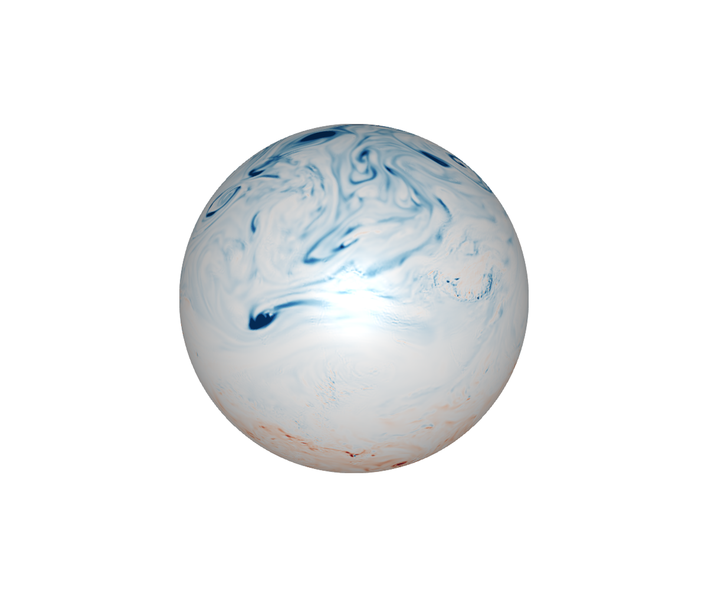
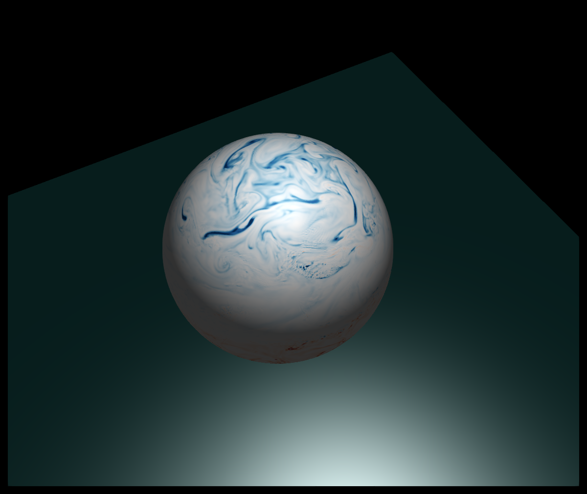
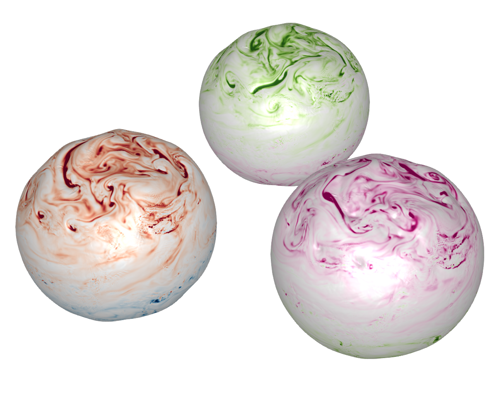
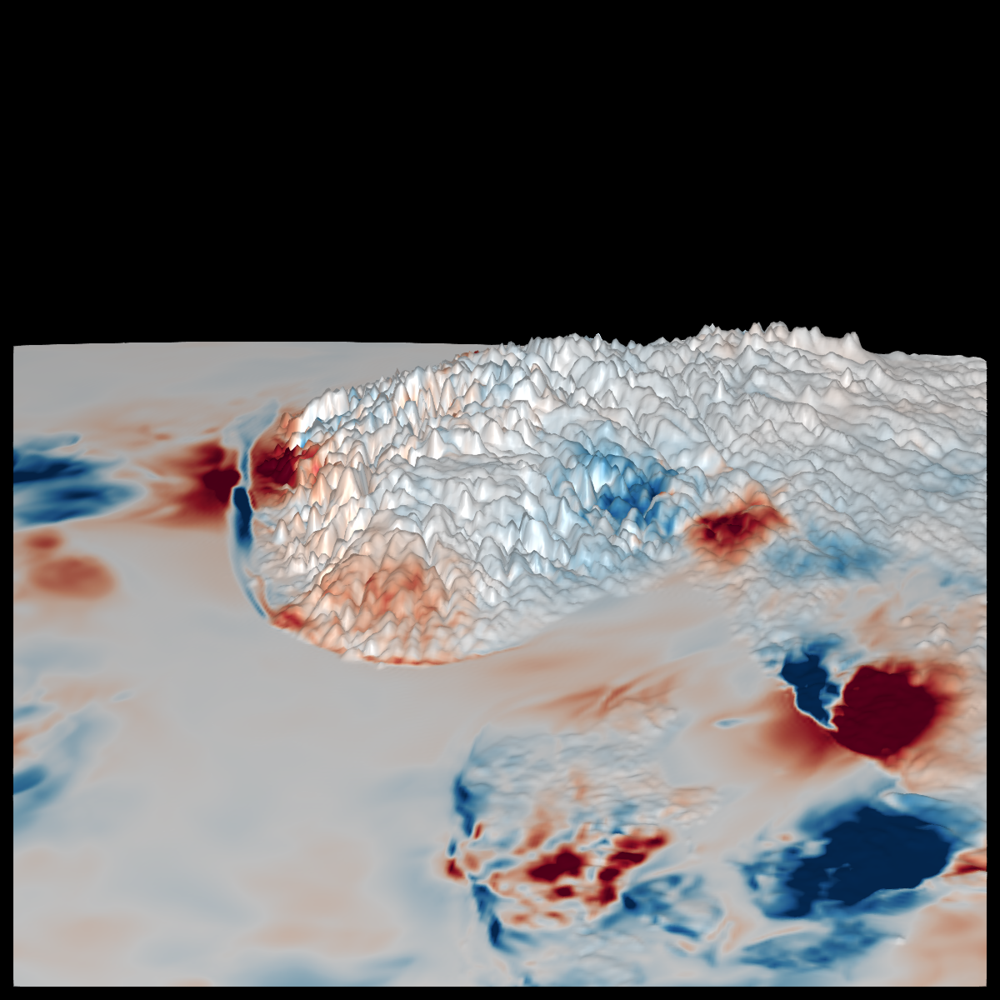
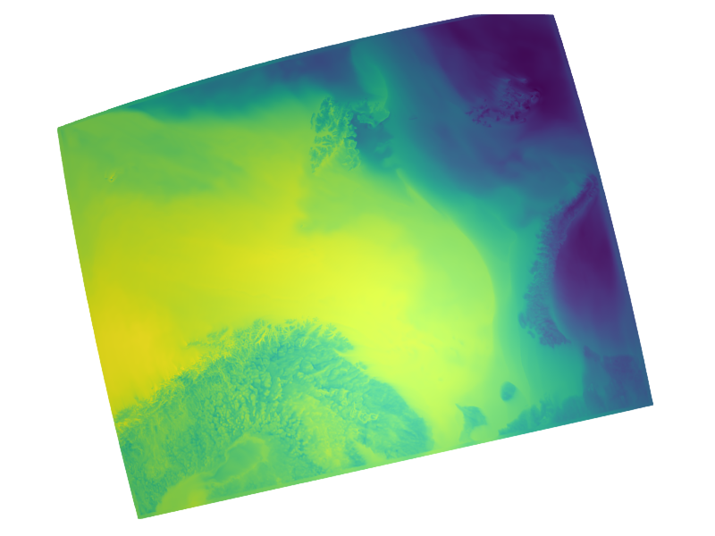
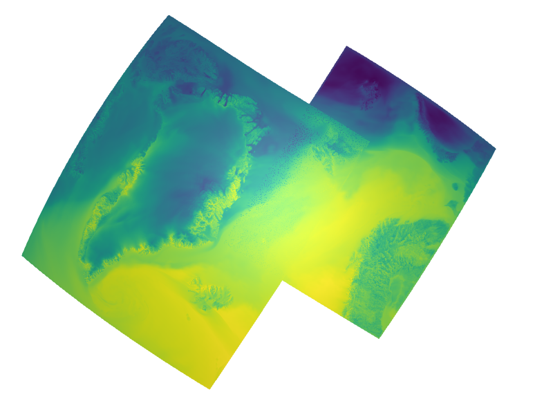
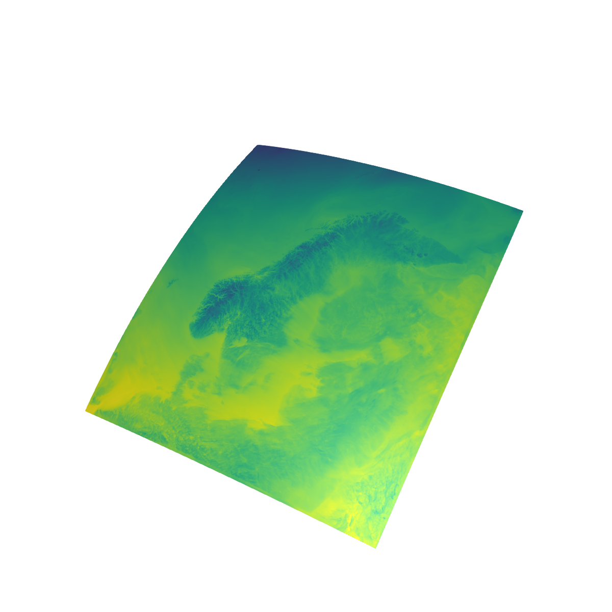

Examples
These examples use NetCDF files from the docs/src/assets directory. For the animations download larger datasets as exlained in the Getting data section.
ERA5 potential vorticity
using NCPlots, GLMakie, NCDatasets
ds = Dataset("assets/era5_pv_z_500hPa.nc")
pv = view(ds, time=1)["pv"]
fig, ax, plt = plot(pv, colormap=:RdBu, colorrange=(-3e-6,3e-6))
save("assets/era5_pv_docs.png", fig) # hide
Control light
Access properties specular diffuse etc. in the returned plt.

Explain how to update camera, change lightposition
Mutliple plots in single axis
See docs/plotlogo.jl for an example

Plot on geopotential height surface
Multiply x, y, z by geopotential height

Plot on orography
See plot geopotential height. Color show temperature increments from data assimilation

CARRA
 
Metcoop
archive="/lustre/storeB/immutable/archive/projects/metproduction/MEPS/"
ds = Dataset("$archive/2023/10/01/meps_det_2_5km_20231001T00Z.nc")
field = view(ds,hybrid=65,time=1)["air_temperature_ml"]
plot(field)
Animated plots
To make these animations use Observables and @lift to lift the dataset view e.g.
ds = Dataset(...)
t = Observable(1)
pv = @lift(view(ds,time=$t)["pv"])
plot(pv) Updating t wil update the plot e.g.
for i=1:100
t[] = i
sleep(0.01)
end 
You can access eyeposition in ax.scene and update in the for loop